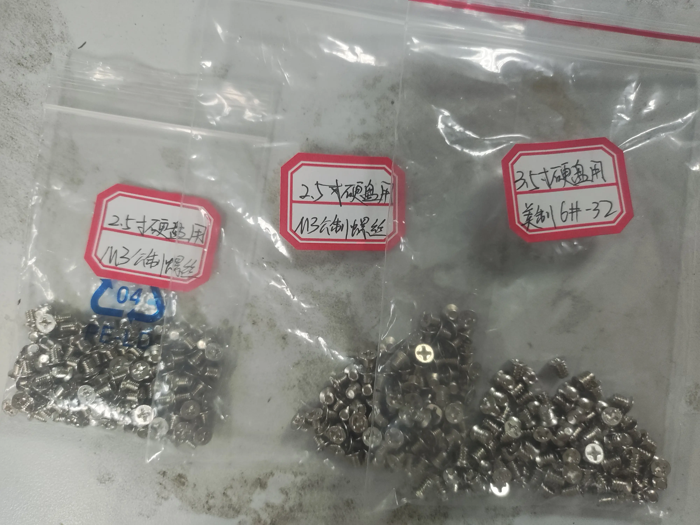
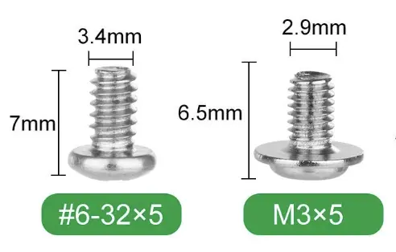
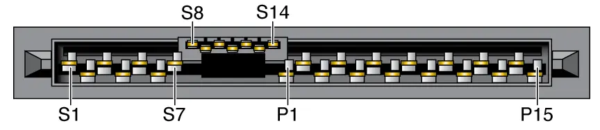
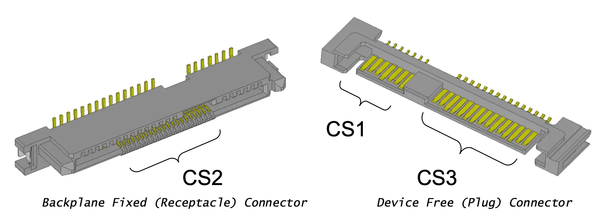
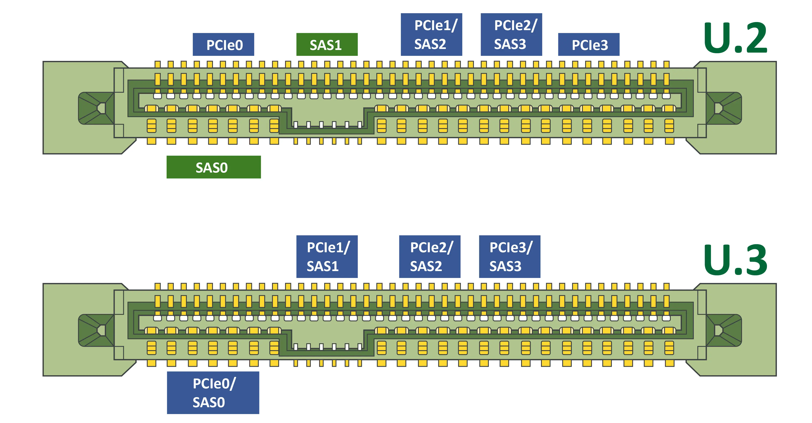
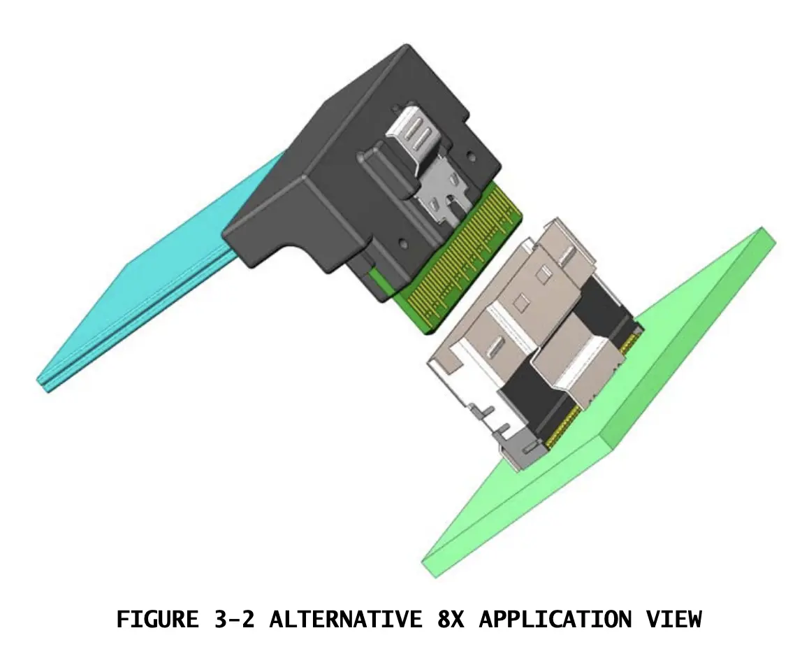
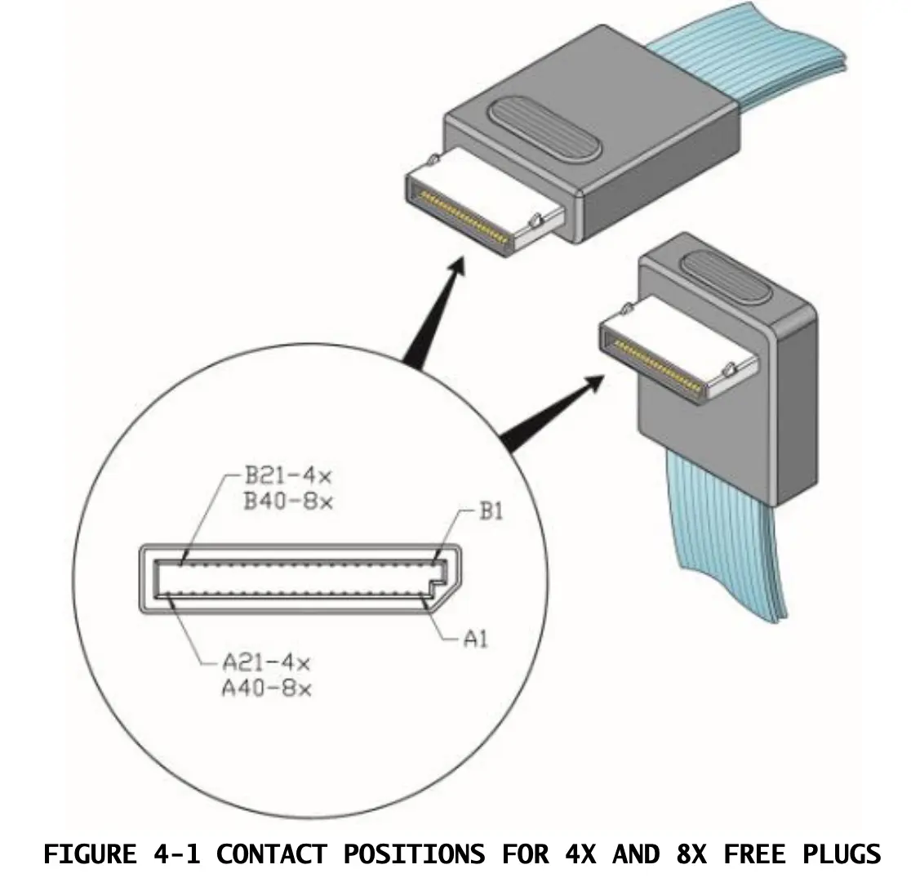

硬件知识¶
Abstract
本文档介绍各种各样的硬件知识，从螺丝到线缆到设备接口。
如果你觉得有需要补充的硬件知识，欢迎动手编辑本文档！
螺丝¶
经验之谈
螺丝非常容易乱丢！如果从哪里拆下螺丝，请记得用密封袋装好贴上标签！
- 机柜螺丝：常见 M5 和 M6 型号，数字就是直径为几毫米。一般用于固定服务器机架、挂耳等。这种螺母可以固定在机架上。方便旋动。
{kind=link}
{kind=link}
-
机箱螺丝：下面都是一般情况。总之用原配的螺丝最好，所以一定要标记清楚！
- 机箱中最常见的螺丝是 M3（公制）和 6#32（美制）。
- 这两者直径相差不大，但螺纹间距（牙距）不同，极其容易用错导致螺纹滑丝。
- 前者的螺纹更细密，后者更松更粗，其实是比较容易分辨的。
- 一般前者用于 2.5 寸固态硬盘，后者用于 3.5 寸机械硬盘、PCIe 插槽固定。
 运维时把螺丝分类放好  M3 与 6#32 螺丝 - 总之，螺丝不要硬拧，感觉不对就停下来换螺丝，否则螺孔可能就废了。
- 机箱中最常见的螺丝是 M3（公制）和 6#32（美制）。
{kind=link}
{kind=link}
电源线缆¶
- 国标电源插头有 10A 和 16A 之分，其中 16A 插头略大。这两种插头插座不通用。
- 基础负载：10A 插座负载功率=220V×10A=2200W；16A 插座负载功率=220V×16A=3520W。
{kind=link}
- 服务器电源插孔有 C13 和 C19 之分，它们的最大电流有区别。C13 一般对应 10A 插头，C19 对应 16A 插头
{kind=link}
{kind=link}
{kind=link}
- PDU 上常见的组件如下：
- 10/16A 过载保护器：机柜上的小 PDU 有，过载会跳起来，按下去恢复正常。
经验之谈
PDU 不足时我们曾经将两台大功率服务器接到 10A 小 PDU 上，导致 PDU 过载保护器跳闸。应当注意计算 PDU 的额定功率，不要超载。
{kind=link}
{kind=link}
{kind=link}
网络硬件¶
光模块、网络线缆、网络设备等硬件介绍见 认识数据中心网络#认识硬件。
外围设备及其接口¶
Quote
本节主要描述的是存储设备，但这些概念基本适用于各种外围设备。存储设备的连接划分为协议、总线与接口三个层次，如下图所示：
{kind=link}
总线¶
总线发展的趋势是从并行演变为串行：
- 并行就是用多根线同时传输数据，串行就是用一根线顺序传输数据。看起来串行慢，但并行占用空间大，I/O 引脚过多变得无法接受，且随着传输速率的提高出现了难以解决的串扰问题。
- 这两种总线架构不同：串行总线只能点对点连接两个设备，而并行总线可以在单一总线上连接多个设备，并且很容易增减总线上的设备。对于串行总线，我们需要使用交换机和多个总线设备连接。
{kind=link}
Example
- PCI（Peripheral Component Interconnect）是并行总线，PCIe（PCI Express）是串行总线。
- ATA（Advanced Technology Attachment）是并行总线，SATA（Serial ATA）是串行总线。
- SCSI（Small Computer System Interface）是并行总线，SAS（Serial Attached SCSI）是串行总线。
- USB（Universal Serial Bus）是串行总线。
CPU 可以直连出 PCIe 总线，而 SATA/SAS/USB 等总线总是由芯片组/控制器引出。如今的高速存储都开始使用 PCIe 总线，如 NVMe SSD。
{kind=link}
PCIe Switch¶
PCIe Switch 是一种用于扩展 PCIe 总线的设备，可以将一个 PCIe 总线扩展为多个 PCIe 总线。它利用了 PCIe 串行总线点对点通信的特点。它的应用场景有：
-
扩展 PCIe 总线：将一个 PCIe 总线扩展为多个 PCIe 总线，可以连接多个 PCIe 设备。多见于 GPU 服务器，一般为 4U，支持 8 卡，比如我们的宁畅 X640 G40。
如下图所示，CPU 只需要向 PCIe Switch 提供 x4 PCIe，就能扩展出 4 个 x4 PCIe 设备和一个 x1 PCIe 设备。当然这肯定会有延迟、带宽之类的损失，比如在该 PCIe Switch 下的所有设备 Host to Device 的总带宽只能局限在 x4，但是 Device to Device 带宽一般可以达到满速。

PCIe Switch 扩展 PCIe 总线 -
拆分 PCIe 总线：将一个 PCIe 总线拆分为多个 PCIe 总线，可以连接多个 PCIe 设备。多见于 PCIe 转接卡。这里就不会有总带宽的问题，因为每个设备都有独立的 PCIe 总线。
Example
比如有一些 PCIe x16 转 4 U.2 的转接卡（因为 U.2 每个只占 x4 通道）。这些自带 PCIe Switch 的转接卡不需要主板支持 PCIe 拆分（PCie Bifurcation）。而比较便宜的 PCIe x16 转 4 U.2 转接卡就不带 PCIe Switch，需要主板支持 PCIe 拆分。这就是价格差异的原因。

PCIe Switch 拆分 PCIe 总线
接口¶
SATA¶
传统机械硬盘都是 SATA 接口，一般为 SATA3，速率 6Gb/s。
{kind=link}
SAS¶
既可以称为一种接口，也是一种协议。这种接口能够兼容 SATA 协议，支持 SAS 协议，并进一步支持了 PCIe 通道。这种接口具有多种版本，更新的版本使用更多引脚，支持更高的速率。因为种类众多，接口名称也十分混乱。
SAS 协议由 T10 技术委员会制定，该委员会负责 SCSI 和 SAS 以及相关标准。SAS 使用的接口由 SFF TA TWG 制定，该工作组还负责 QSFP 等接口标准。他们制定的协议相互组合以实现一个特定速率的接口，比如 12GB/s 的接口就使用了如下标准相互协作：
{kind=link}
-
SFF-8482 Serial Attachment 2X Unshielded Connector：可以看到它在 SATA 接口的缺口部分添加了引脚。这种接口的硬盘支持 3、6、12Gb/s 速率。一般说 SAS 指的都是这种接口，企业级机械硬盘普遍使用该接口。
 SFF-8482 接口 -
SFF-8630 Serial Attachment 4X Unshielded Connector：在背面添加了更多引脚。这种接口不多见。
 SFF-8630 接口 -
SFF-8639 Multifunction 6X Unshielded Connector：背面排满了引脚。这一接口标准定义了 4x PCIe 通道，也称为 U.2 接口。该接口普遍用于企业级 2.5 寸 NVMe SSD。

SFF-8639 接口  U.2 与 U.3 引脚定义
{kind=link}
{kind=link}
{kind=link}
上面描述的接口一般位于存储设备，扁平的接口占用面积较大，因此又定义了一族 Mini 版的接口，常见于主板、PCIe 转接卡上，它们也被用于 PCIe 设备连接：
-
SFF-8613 Mini Multilane 4/8X Unshielded Connector (HDun)、SFF-8614 Mini Multilane 4/8X Shielded Cage/ Connector (HDsh)：分成有屏蔽/无屏蔽两种，前者常用于硬盘背板。我们的 GPU 机柜使用有屏蔽的版本，部分 DAS（直连存储）设备也使用这种接口。又称为 Mini-SAS HD。
-
SFF-8086 Mini Multilane 4X 10 Gb/s Common Elements Connector、SFF-8087 Mini Multilane 4X Unshielded Connector Shell and Plug、SFF-8088 Mini Multilane 4X Shielded Connector Shell and Plug ：硬盘背板常用该接口连接到主板，因为它能拆分出 4 条 SATA 通道。它分成有屏蔽/无屏蔽两种。又称为 Mini-SAS。
-
SFF-8654 0.6mm 4/8X Unshielded I/O Connector：比较新的支持 U.2/NVMe 的硬盘背板一般采用这种接口连接到主板，它支持 PCIe 通道。又称为 SlimSAS。
 SFF-8654 接口（8X，此外还有 4X） -
SFF-8611 MiniLink 4/8X I/O Cable Assemblies：服务器上并不常见。又称为 oculink，用于连接 PCIe 设备，如 GPU。
 SFF-8611 接口
{kind=link}
{kind=link}
{kind=link}
{kind=link}
{kind=link}
{kind=link}